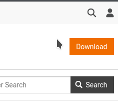
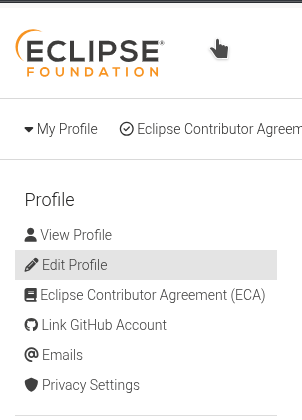
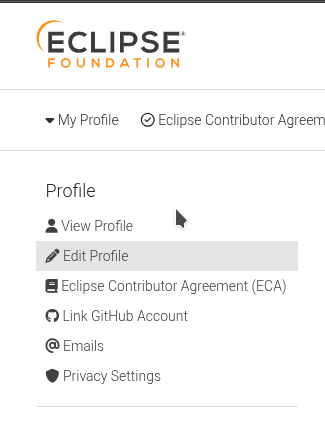
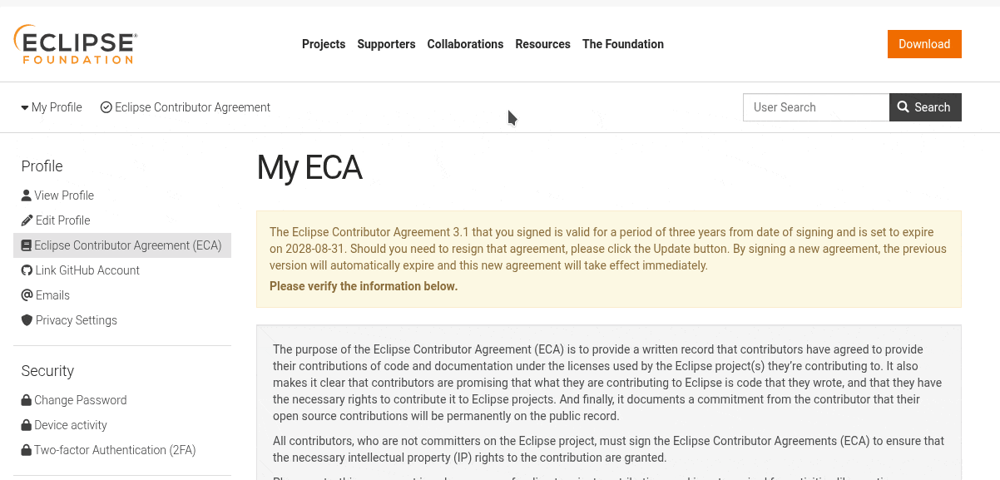

How to Contribute to the Unified RISC-V Access Platform (UAP)
The Unified RISC-V Access Platform (UAP) is a contribution-based platform. It was born from the need to centralise and simplify access to open source RISC-V core and associated IPs developed under the framework European research projects, initially TRISTAN and ISOLDE, funded by the European Chips Joint Undertaking (Chips JU).
While this is a collaborative effort managed by OpenHW Foundation, under the framework of TRISTAN, the UAP relies on contributions from participating projects, which contribute their IPs to the platform's catalogue and take part on the discussion to bring up new features, done through the Virtual Repository Task Group (VRTG) regular meetings.
Please note that, while this platform was conceived to catalogue open source IPs and tooling associated to RISC-V projects, part of the objectives of TRISTAN, it is not restricted to it.
Proprietary or multiple-licenced IPs, IPs non-directly associated to RISC-V, and other projects that may be part of the ecosystem are also welcome to join.
This guide will walk you through the process of adding new RISC-V IPs, subprojects, or updating existing catalogue entries.
Part 1: Edit or Create Your Contribution to the UAP catalogue
Use the Editor to create or update a project's catalogue JSON. The workflow below explains recommended steps to prepare, save and submit changes via a GitHub Pull Request (PR).
Open the Editor: click on the Editor button at the top of the site.
Load or create a project file
On the Editor page, you will see options to start your contribution. A "Project", in the UAP context, refers to an EU Research Project, which may comprise many IPs or contributions to existing IPs directly associated to tasks or Working Items. Projects are regarded as the top-level entry, represented by a single JSON file located in the /ips/ folder of the UAP repository:
Choose an existing project's JSON from GitHub using the Select existing file from GitHub dropdown.
Or load a local JSON with the Load local file button.
Or create a new project file with the Create new file button.
Edit IP entries: each row in the editor represents an IP or subproject. Fill the fields carefully:
Name: Mandatory field. Should be unique across projects.
Indicate the current completion status of your IP (e.g., "In Progress", "Released", "Archived", "Prototype").
Note: This field is currently not validated by the editor.
Category: Mandatory field.
Assign your IP to one or more existing categories. These categories are pre-defined in the cfg/categories.json file. You can select multiple categories from the dropdown list that appears when you interact with this field.
Important: If you wish to add a new Category, feel welcome to propose them to the Virtual Repository Task Group (VRTG), in order for it to be discussed and approved before they can be added to the UAP.
URL: a valid web address for the IP (repository, project page, or documentation). Leave blank only if not applicable.
For contributions to existing IPs, point it to the specific branch or commit hash associated to this IP entry. For proprietary IPs, provide a webpage or repository where users can find a description or access its output assets.
Important: This field must contain a valid URL; otherwise, it should be left empty.
License: Specify the distribution license(s) for your IP, adhering to SPDX identifiers.
You can specify multiple licenses if different parts of your IP or its dependencies have various licensing schemes.
Note: This field is currently not validated against the official SPDX license list by the platform, so please fill it accordingly to ensure it is accepted during review.
Status: Mandatory field.
Indicate the current completion status of your IP (e.g., "In Progress", "Released", "Finished").
Note: This field is currently not validated by the platform. It shall be limited to a set of options in the future, to be discussed by the VRTG.
Description: A brief one-paragraph summary of your IP. For longer descriptions, link in the URL field.
WI: Working Item or Task identifier associated with the IP, under the framework of your Project. This is an optional field.
Partners: Identifiers of the Project partner organization(s) associated with the IP. You can list multiple partners. Please use the abbreviations established in your Project's official documents.
Note: There is currently no validation for this field. As this information is specific to each Project, and organizations may use different abbreviations, a JSON file with partner profiles (similar to cfg/projects.json and cfg/categories.json) may be considered for future implementation by the VTRG.
Comment: A generic field for internal notes or comments about an IP. This field is for your convenience.
Note: This field may be removed in future updates.
Save the project file: Once you are satisfied with all the IP entries for your Project, give the project a name if it is a new project, and click Save File. The editor will validate the required fields and download the resulting JSON to your machine.
Submit your changes via a GitHub Pull Request (PR)
Create an Eclipse.org user account. You will also be asked to link your Eclipse.org account to your GitHub account and sign the Eclipse Contributor Agreement (ECA), as demonstrated below.

Accessing your Eclipse.org account user settings.

Linking your GitHub account to your Eclipse.org account.

Accessing and signing the ECA.

Accessing and signing the ECA.
On GitHub, access the official repository of the UAP: https://github.com/openhwgroup/tristan-isolde-unified-access-page. Click the "Fork" button (usually in the top-right corner) to create a copy of the repository under your own GitHub account. Follow the standard GitHub procedure to complete the forking process. Once done, navigate to your newly forked repository page (it will look something like github.com/YOUR_USERNAME/tristan-isolde-unified-access-page).
Now, you need to add your locally saved Project JSON file to the /ips/ folder within your forked repository. We recommend using the GitHub UI for simplicity:
On your forked repository page, navigate into the ips/ directory.
Click the "Add file" button (usually near the top of the file list), then select "Upload files" from the dropdown.
Drag and drop your Project JSON file into the designated upload area, or click "choose your files" to select it from your computer.
Provide a concise commit message (e.g., "Add new project: MyAwesomeProject" or "Update MyExistingProject with new IP MyNewIP").
Click "Commit changes".
Once your changes are committed to your fork, it is time to propose them to the main UAP repository. Commit and push your change, then create a PR to the main repository as in the follow instructions. Please provide a concise PR description describing your changes
On your forked repository page, click on the "Pull requests" tab.
Click the "New pull request" button. GitHub should automatically detect that you have pushed changes to your fork and suggest comparing them with the base repository.
Ensure the base repository is openhwgroup/tristan-isolde-unified-access-page and the head repository is your fork (e.g., YOUR_USERNAME/tristan-isolde-unified-access-page).
OpenHW staff will review and merge the PR; once merged the live site will update shortly.